sturdy-spoon blog
# 2022 July 17
As I write morning pages, I can also record morning music practice. Music pages. I learnt yesterday how to count in the binary system on my hands, my brother taught me this. Counting on fingers is an intresting introduction to numeral systems. It gives a sense of usefulness to mathematics :). I had the idea to transcribe Idle Moments by Grant Green, and Equinox by John Coltrane. I learnt to play Ab#5addMajor on the keyboard and transposed it to 12 keys and added rhythm, or played to rhythm. I did trikonasana, paravritta trikonaasana, parshvakonasana, paravritta parshvakonaasana, etc, all the standing poses. I am practicing the 2 minutes habit forming idea from James Clear, so that I try to do 2 minutes of yoga, instead of not doing any yoga at all. It works great so far! « Accumulate pages and not judgements » Great, these pages are a way of expression, I express some ideas. Rubberducking. Elephants. «_Make way for creativity » I liked The Irishman. I am practicing watching sunlight in the early hours of the day, to keep my dopamine balanced, and I try to not look at bright lights between 22pm and 4am. I am learning jiu jitsu from videos, sometimes. I can upcycle artwork if I don’t produce any. I can make an effort to promote my failures. This is a great inspiring recording To Paint is to Love Again - Henry Miller. I listened to this again. I listened to all the Alpinist podcasts at least twice, it would be great to have new episodes. I can make an effort to write more than half a page. A good documentary: Becoming Matisse. 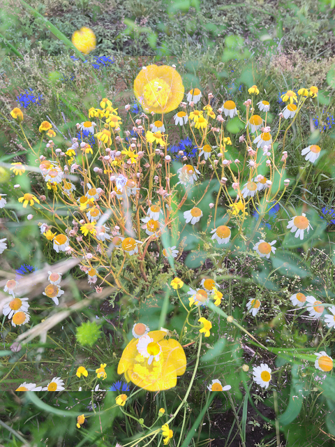 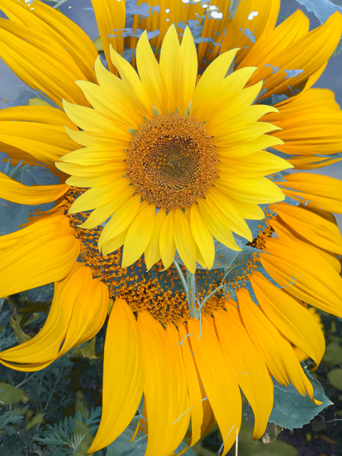2022 July 16
Yesterday I continued learning with the automated testing course. I learnt about converting decimal numbers to hexadecimal and to binary. I didn’t understand how to figure out how many bytes a given decimal number takes. I wrote a page in longhand, I write now almost everyday practicing the Artist’s Way method. Finding flow. We went for a walk with the dog, I collected the names of flowers, the portulaca pilosa is flowering. Portulaca pilosa es una planta anual suculenta de la familia Portulacaceae. Purslane. I used to enjoy coding in the evening with dark mode on. Making sketchbooks. Going to art college. I had a good cup of coffee this morning. I am recalling what I had learnt. I created a draft for this week with Q2 activities that are not urgent and deeply important. It is comforting to know that we are on a planet. Technical blog, trickling ideas. I continued drawing a self-portrait with charcoal, I find it difficult to get the shadows right. I am happy for the weekly spotify playlist. I tried to add an email input to my portfolio page and failed. I will try again at some point. It is added to the page but it doesn’t yet work. I am using Email JS.
« No matter what your age or your lite path, whether making art is your career or your hobby or your dream, it is not too late or too egotistical or too selfish or too silly to work on your creativity. «  Julia Cameron - The Artist’s Way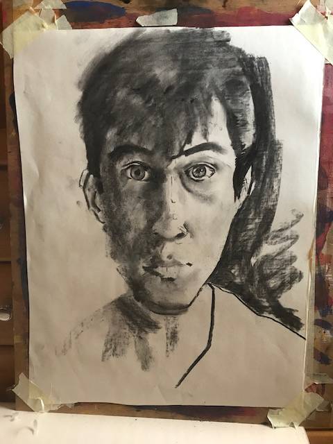 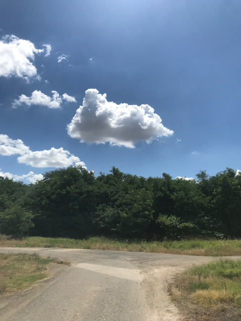 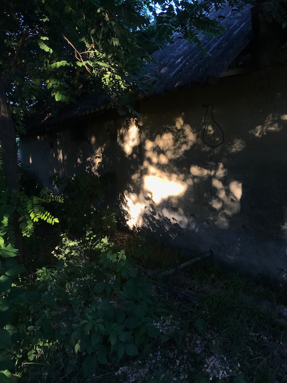 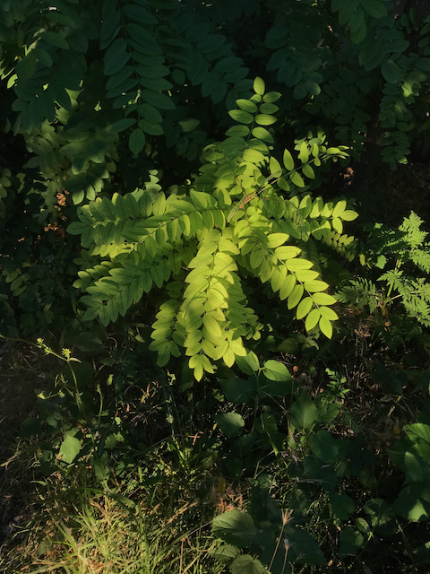
 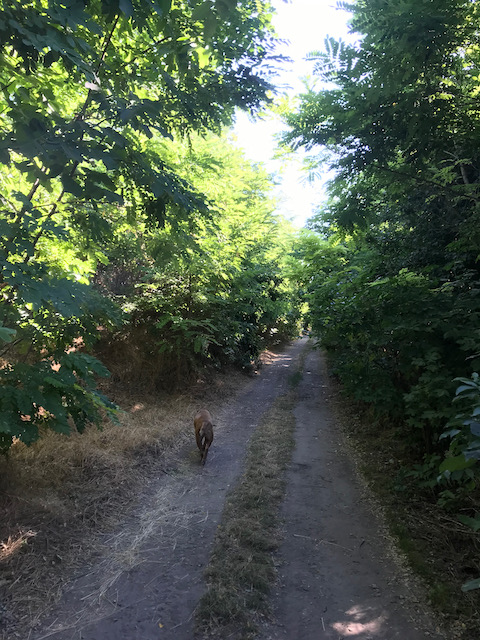
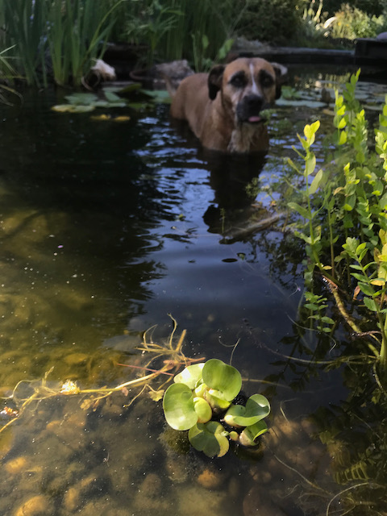
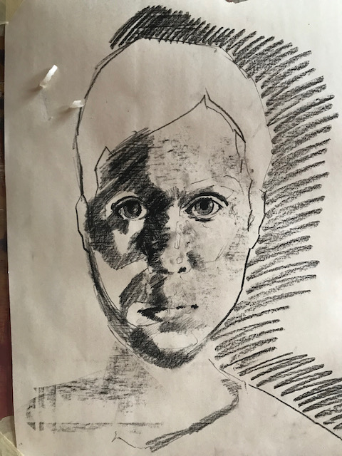
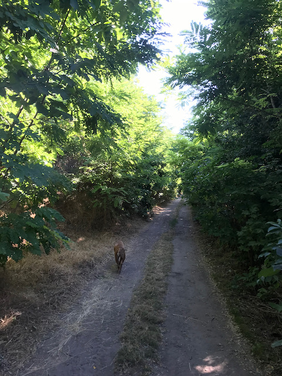
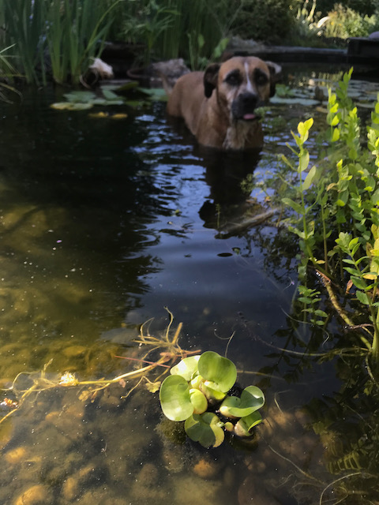
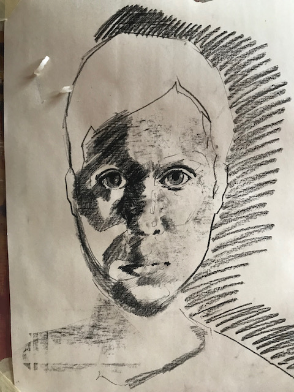
2022 July 15
I watched a video course on Front End Masters for finding a front end job by Jerome Hardaway. There were great tips for building a resume and portfolio. It is important to produce content. Today I recorded some of my practice time on the piano, and although some of it was not recorded because of a bug of the dictaphone, it froze and I couldn’t retain the recording, some of it remained. I read some of the Artist’s Way, it is a practical book about becoming more creative. A creative sort of lifestyle. I started another self-portrait in charcoal. It is important to write, and to write with good style. I am blogging. I learned to play Dsus#5 and transposed it in 12 keys and since it is a dominant function chord I played the harmonic progression V-I, V being this Dsus chord while for I played the block chord in the right hand for G major, or the sixth chord, which is E minor. I am learning these progressions from Bill Dobbins Creative Harmony. It is a good mental renewal and also diffused mode thinking exercise, it is a bit like conjugating spanish verbs. I am reading Conversations with Friends and I plan to continue reading Rozsa Peter’s Playing with Infinity: Mathematical Explorations and Excursions. If I read ten pages a day, I can finish the book in 25 days! I don’t know what excursion means. From mathematics I still remember slope intercept form :). The lotus brought another flower, we took the dog for a walk with my brother, it started to rain. I made pancakes from integral flours, oat, wheat, and linseed. The secret to it was baking them on a lower fire. It takes longer to create a pancake but the consistency of the pancake becomes drier and tastier. Okay I created a page,,,, Hello world. It would be a good idea to create something interactive and add to the blog.
I found a course that seems interesting, it is a front end course that starts in September, by Rolling Scopes and EPAM. I have to learn to not be affected by application rejections. To become immune and to happily continue on my creative, simple path. It would be cool to document my learning. For example I have a feeling of stiffness in my back and neck from sitting around the computer and yoga helps with this.
2022 July 11
I started a test automation course. I recall SATA connection to connect a hard disk. I did 2 minutes pomdoroncinos to create productive habits, I learned about the two minutes habit forming exercise from James Clear’s newsletter. I had an interview for an apprenticeship and I got rejected and it inspires me to keep doing what I am doing. To follow a more creative path instead of striving for something stressful. To take things more lightly. I am learning Java from Think Java and I am doing exercises at the moment. I share everything on my blog page’s repository. I draw self portraits, clouds, I use oil pastels, chalk, cheap wrapping paper, I cut it large size, I use sketchbooks, I draw outside, I draw myself. I did some yoga today and felt great about it, I found a good music track - Nataraja by Jai Uttal, for yoga. Spotify’s weekly discover playlists are awsome. So in this test automation course by EPAM we learn about hardware first, different kind of computers. There will be math for IT and the basics of automation. As far as I know one can create test programs along computer programs that make sure that programs are written well. By the way I will try to write down whatever comes to my mind and it might often be not correct.
2022 july 10
I am writing a page about my learning. I am doing the 10 day gong from the tao podcast, I am running almost everyday, I do some yoga. I learnt about the slope intercept form and about how to find the slope of a function. The slope is the change in y divided by the change in x. The idea is to write elements of recall here, to practice recall, however badly. I felt down because of rejections from applications, because I believe that I am at a good enough level to do an apprenticeship or a course, but I didn’t get accepted to the ones that I applied to. I am learning to trust the ideas and starting points that I have about learning. I used to not follow up on ideas that I do now. For example I have an idea about what to play on the piano, or what to write here, and I could have written that, or I could have played that idea on the piano, I could practice what I have in mind. Julia Cameron writes about this somewhere in the Artist’s Way. To not trample the flowers, shoots, sprouts. It is better to do 2-10 minutes of everything with a fresh spirit than becoming anxious from one thing and wasting a day and energy being depressed.

 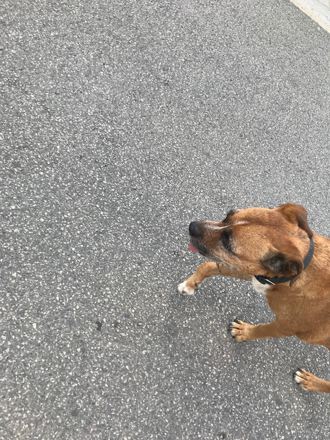
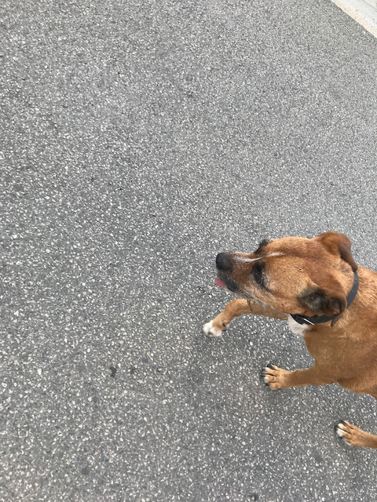
 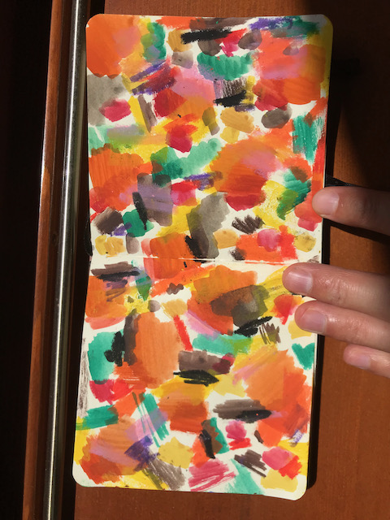
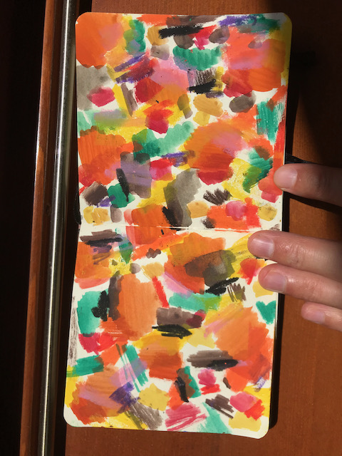
 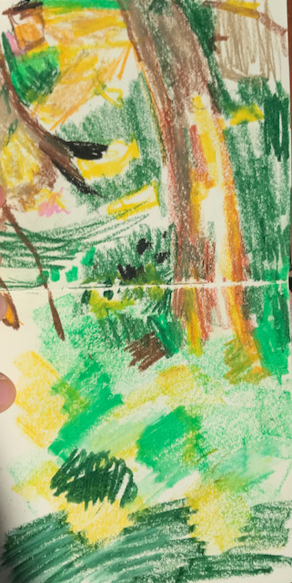
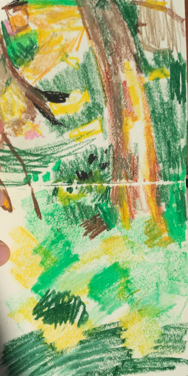
2022 Juin 4
"You can use the remainder operator to “extract” digits from a number: x % 10 yields the rightmost digit of x, and x % 100 yields the last two digits.
"For readability, each major step of the algorithm is separated by a blank line and begins with a comment."
I am learning Java, HTML, CSS, JavaScript and Ruby. I am learning the basics of computer science and refreshing my algebra skills. I am preparing for a mentorship programme in back-end software development.
I started learning Java. I am learning using these tutorials: [Java Tutorial: Learn Java Basics For Free | Codecademy] [Learn Java - Free Interactive Java Tutorial] [Java Tutorials Learning Paths] I am reading this book: [Think Java 2e – Green Tea Press] I am preparing for a coding challenge in a months time for a course and job application. It seems dificult to write down what I learned so far. I learned how to print Hello World. I learned about variables, and defining variables. I learned that the Java Virtual Machine compiles the code I write into byte language that the computer can understand. I am practicing by solving problems on codewars and doing quizes on codecademy mobile app.
2022 Juin 01 - Große Brennnessel
Urtica Dioica
Die Große Brennnessel (Urtica dioica) ist eine Pflanzenart der Gattung der Brennnesseln (Urtica) in der Familie der Brennnesselgewächse (Urticaceae).
https://de.wikipedia.org/wiki/Gro%C3%9Fe_Brennnessel
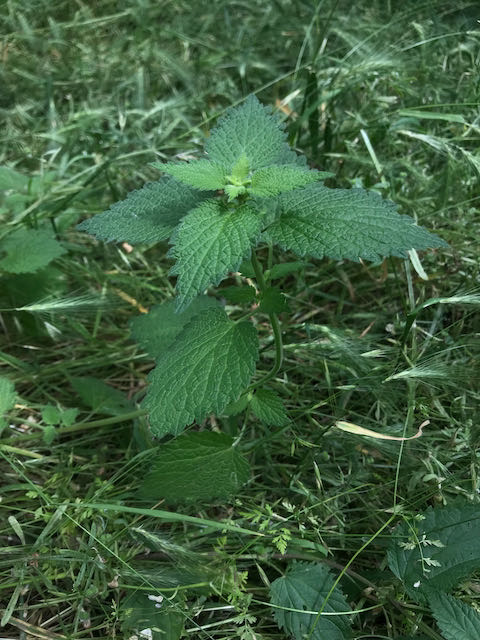I found this grid tutorial and I am learning Java!
2022 May 29 - Coquelicot
Plante
花（はな)
Coquelicot ( /ˈko äklɪko ä/ KOHK-li-koh) is a shade of red. The term was originally a French vernacular name for the wild corn poppy, Papaver rhoeas, which is distinguished by its bright red color, and orange tint.[2] It eventually passed into English usage as the name of a color based upon that of the flower. The first recorded use of this usage was in the year 1795.[3] Claude Monet painted Les Coquelicots or Poppies Blooming in 1873.
https://en.wikipedia.org/wiki/Coquelicot

30 ways of drawing flowers - I drew the above drawing following this drawing on Pinterest.

I created a page with flexboxes and some of my drawings that I made at the graphic design course in Budpest, and photographs: bookish-funicular.
2022 May 25 - Inspiration for today
I am reading the cargo newsletter https://cargo.site/. This is a site I found inspiring: https://daisart.press/. I am trying to develop a habit of drawing, so I spent a few minutes sketching. In the past I enjoyed posting rengularly to art forums and I progressed a lot that way. I will try to create a grid here. The acacia trees are laden with flowers. It is the first time I really noticed acacia trees. I used to eat the flowers.
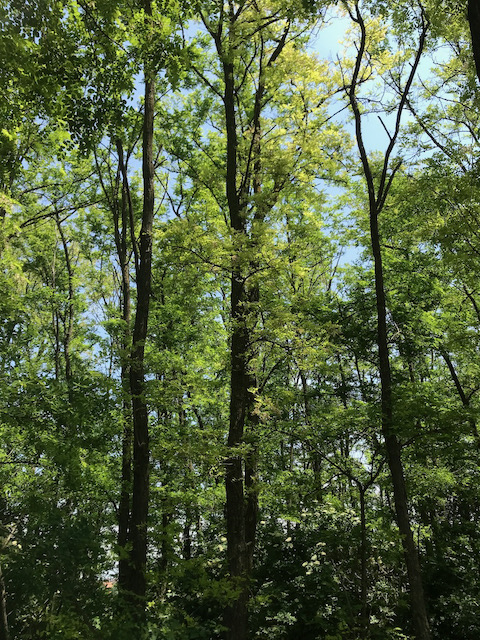 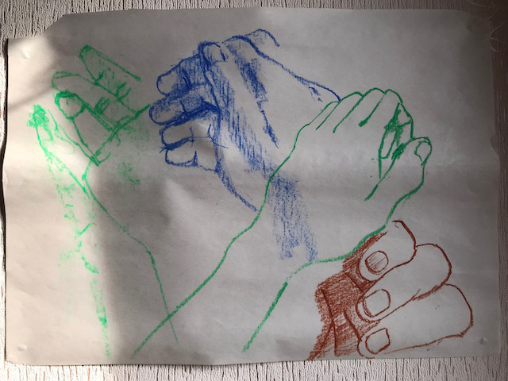alt text could be poetic, I could practice writing alt text
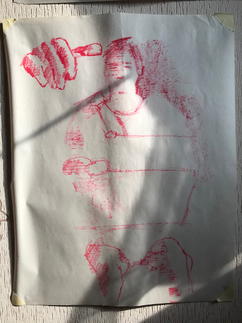 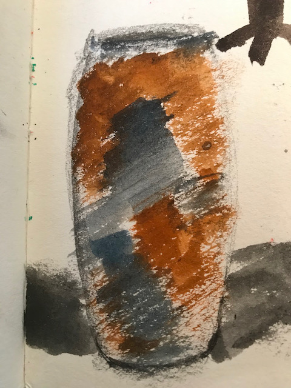
2022 May 19 - Arduino Space Station
I am currently studying typography. There is the feeling of « I don’t know what this is for » but I am doing it anyway - learning to use Arduino. The same concepts are used in programming the Arduino as in learning to use JavaScript, such as function, variable, loop, meaningful naming of variables, binary on/off, control flow, if statement, leaving comments. Today I learnt to build a Space Station with Arduino. Pressing a switch I can toggle three LED lights.
Writing down, documenting my progress, my learning. I am looking at variations to simple algorithms. It is an exercise in looking at and being able to read code. Solving algorithms and looking at other people’s solutions is in a sense studying with others. At uni it was valuable to look at other’s work, it is stimulating.
mar 2022 mai 17
I don’t know where these drawings and Kanji are going, but they feel good especially as I am reading Sunryu Suzuki’s book Zen Mind Beginner’s Mind. RAKU WABI-SABI, « every day is a good day ». Phrases that work well in the morning pages come through, I save them. Further develop ideas. I am continuing to learn JavaScript from Eloquent JavaScript, I am rereading parts of the book. It is interesting.
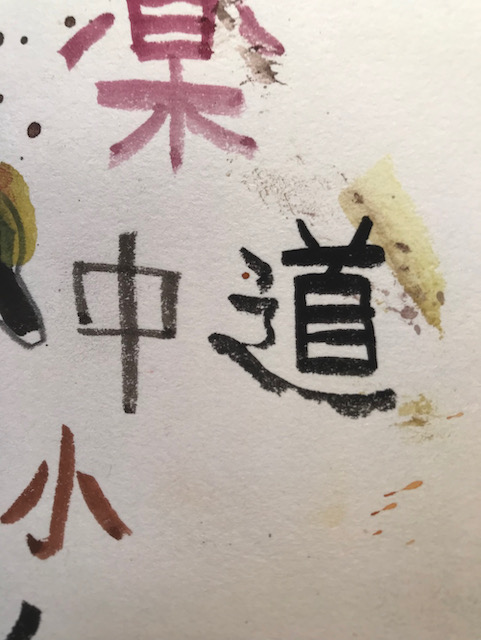 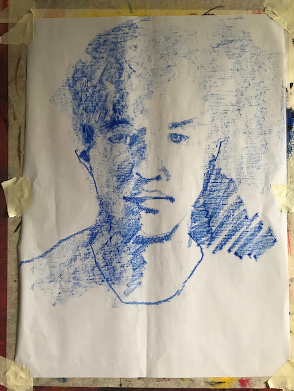 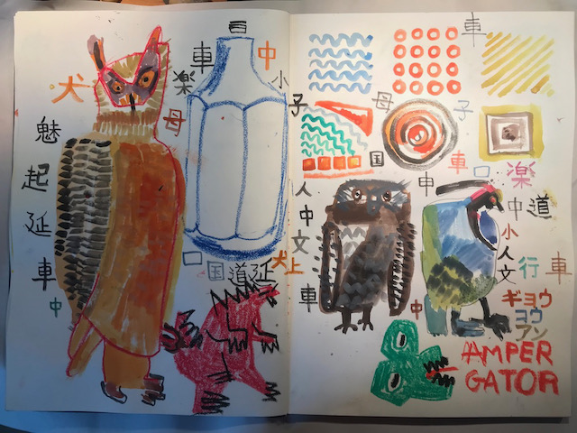 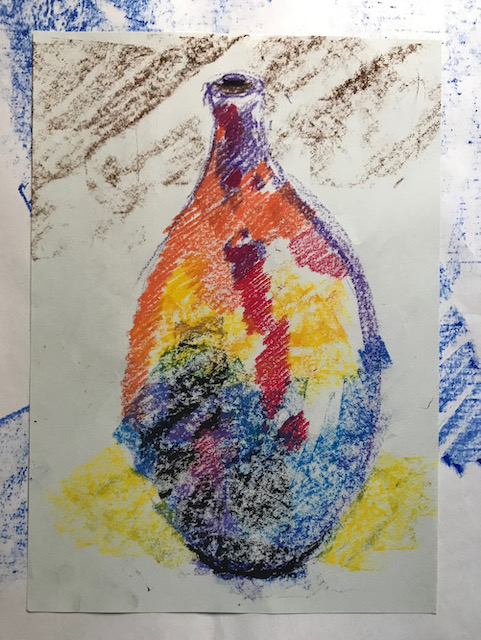 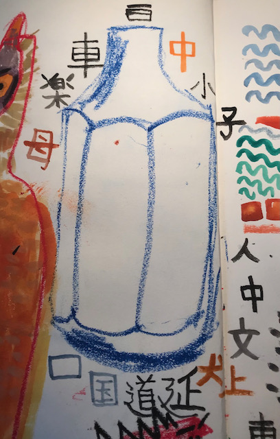hello world

"Az orok kezdok szelleme sokra kepes, a kitanultake csak kevesre."
- Sunryu Suzuki

// to start memorisation with the most difficult parts } // to spend time with this throughout the day, through weeks and months Object, iterator, class, built in object, won’t collie with keys, unique property keys. I memorised a matrix algorithm. I am trying to get my head around the current chapter of Eloquent JavaScript, I encounter a lot of new concepts. I am writing down phrases I don’t understand and I look them up in DevDocs. The experience is similar to learning a new language. For example I look up « built in object » as an unknown word in a dictionary. I find the learning process interesting. I am looking forward to being familiar with this part of the language.x

May 11 2022
I copied these drawings from Pinterest drawings.
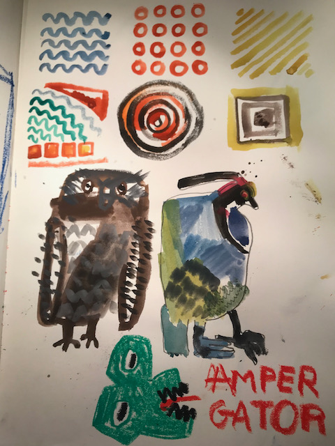 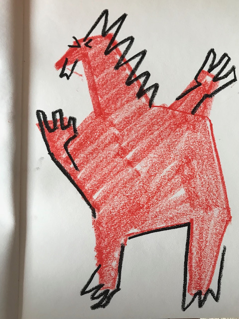 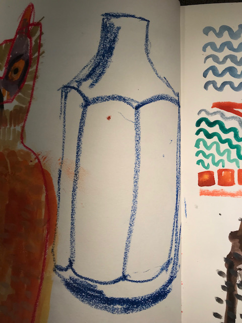 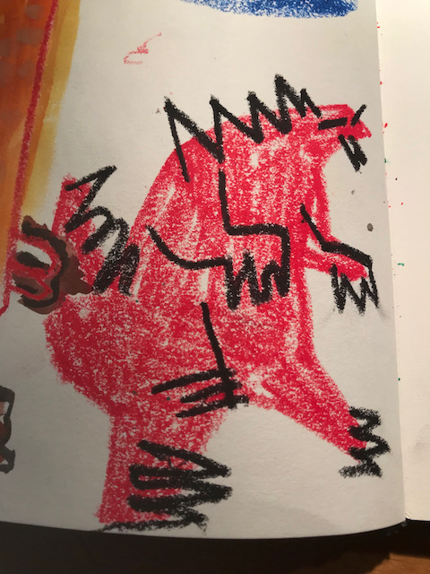 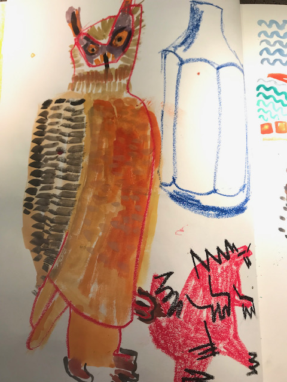 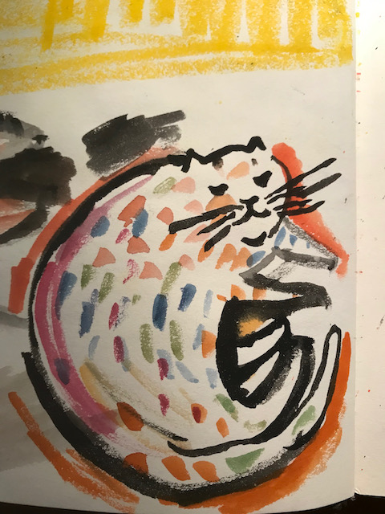I started learning to build a falling sand game, I memorised some of it, I tried to find out how to even start building it from the web developer tools in the web browser but I couldn't find out. I practiced touch typing while building the initial code, and I learnt a little using VS Code. This comment can go onto the blog. I had the idea to make a similar "recall" after every pomodoro, or during the pomodoro, and then I would have a page of writing to post here. I am learning about currying by trying to solve a currying algorithm. I figured that it is enough to share my drawings here on the blog.
Elkezdtem megtanulni a falling sand jatekot, memorizaltam, megprobaltam kitalalni a webbongeszo fejlesztoi eszkozeivel, hogy hogyan kezdjem el osszerakni a jatekot, de nemtudtam kitalalni, viszont elkezdtem memorizalni a kodot, es gyakoroltam a touchtypingot, gepelest, meg a VS Code hasznalatat. Ez a jegyzet angolul mehet is a blogra, meg minden pomodoro kozben, vagy utan irhatok egy ilyen "recall" jegyzetet. Es akkor lesz tobb mint egy oldal jegyzet a blogra, mint technical blog.
May 10 2022
Since I posted I learnt two methods to multiply and to divide one and two digit numbers. I am doing the pre-algebra courses at Khan Academy to refresh my mathematics knowledge. I am reading Eloquent JavaScript and doing the exercises, I also memorize simple algorithms, I find that memorising gives insight into new patterns. I learnt some typography. I tried to solve algorithms in JavaScript.
MAY 4 2022
Today I started making a page from my Figma sketches, this is the page.
2022 Majus 1
2022 Aprilis 30
Asynchronous operation, Promise.all(), prime numbers, factors, multiples. Doing the pre-algebra course on Khan Academy I develop my English language knowledge as well as my mathematical thinking. It is fun. I learnt a new method for dividing numbers. Learning maths and music, continuing my education is beneficial for my mental health.
2022 Aprilis 29
I studied computer science at high school and we learnt using the basics of Pascal, but I hadn’t been learning any programming languages until a year and a half ago when I started to focus on, and to learn to code. I have been learning the basics of Front-End Development. At the moment I am learning JavaScript at codecademy with the intermediate JavaScript course. I learnt some Ruby with codecademy, I liked that course. I am continuing to learn Ruby with the book Learn to Program. I am learning to play the piano with Herbie Hancock’s masterclass. I am practicing from Beringer’s Tagliche Studien, those exercises are fun to do. I am paying attention to playing gently, with a relaxed sense of touch. I am continuing to recover creatively with the Artist’s Way by Julia Cameron. I did an Arduino project a few days ago with a switch that toggles an LED. I learnt a few keyboard shortcuts in the interactive playground of VS Code.
2022 aprilis 27 - today is a cloudy day
I went for a run, did some yoga, played the piano.
# Today’s recall I built something from Arduino. I started to do projects in the Arduino book, and this time I am paying more attention, I am more curious. I listened to a StackOverflow podcast episode. I sat in the sauna. I listened to the sound of rain. I continued learning intermediate JavaScript, modular programming, asynchronous operations. I learnt some mathematics at Khan Academy.Thought process - this is my learning. I am doing for process.
// see if the current element is a whitespace character
// return the result
// create an empty array
// add the current element to the array
// make the current element upper case
// a resulthoz adj hozza egy tombot, aminek az elso eleme egy ures karakterlanc ''
// I am using pencil and paper to do it
// I get stuck, I don't know how to step to the next letter
// I don't know how to skip whitespaces
// I will try to build words letter by letter
// Megakadtam
I am studying maths with Khan Academy, I am refreshing my algebra knowledge, it feels really good to solve simple mathematical problems.
I solved the wave algorithm at codewars and it felt incredible .
2022 aprilis 23 - today is a rainy day
I am continuing to learn shell, I found this website to learn from, and there are plenty of algorithms to solve on codewars. I am generally applying the "20 minutes" learning, practice sessions, if I regularly study something for 20 minutes is better than learning something for a long period of time a few times and perhaps becoming fed up with it. I learnt how to make a VARIABLE="in shell" and that $VARIABLE is a way to call it. This is a script I made with the shell tutorial at learnshell.org. If anything I can look at these blog posts and learn from it.
The next time you are tackling a tough problem, work on it for a few minutes. When you get stuck, move on to another problem. Your diffuse mode can continue working on the tougher problem in the background. When you later return to the tougher problem, you will often be pleasantly surprised by the progress you’ve made.
Being satisfied with the feeling of not knowing. This is a good podcast episode on creativity with John Cleese.
I read about colors in accessibility, and about how to make videos accessible. It is a useful subject to read about, and I can use and improve my reading skills reading similar articles. I guess I improve my web development and general life skills reading articles on accessibility and coding, and design. I spent some time completing the main projects on freeCodeCamp. This is fun, I am making a Survey Form with the theme of herbalism. I am revisiting the basics of HTML, attending to accessibility and playing with CSS.
I kept practicing the diminished and half diminished "drop two" voicings and it is becoming somewhat more fluent
2022 Aprilis 21
I spent time learning React [Quick Start](https://beta.reactjs.org/learn). I practiced memorisation for piano. Beautiful sunny day today, the air is not too warm. We went for a run with the dog. I did a code pomodoro and solved a simple algorithm with Ruby on codewars, that takes two characters a and b, and returns a boolean according to whether they are both uppercase, both lowercase or not a letter. The [[:upper:]] regex matches uppercase letters. It is equivalent to [A-Z]. I found on StackOverflow that I can also write a function for matching uppercase characters. I practiced « drop two » voicings on the piano from Major7th, Dominant 7th, Minor 7th, half diminished 7th and diminished 7th root chords and inversions.
I was happy because I could solve an algroithm that reverses an array in place, despite doubting that I could. üòå This is in Eloquent JavaScript.
I could slowly play through the half diminished and diminished 7th chords I started doing the Intermediate JavaScript course on codecademy and I am learning about classes, getters and setters, methods. I learnt about these at freeCodeCamp already, but forgot how to do so. I read Ruby in Twenty Minutes, and started reading Learn to Program. I did code pomodoros
I learnt to create these elements at freeCodeCamp:
20 Aprilis 2022
20 Aprilis 2022 - I don’t know what to write. This is technical blog entry. I am listening to the Lifespan podcast. I remember keywords like method, ternary operator, lambda, Proc, refactoring. I practiced for ten minutes on the piano, I played Major 7th chords in « drop two » voicings, and and idea similar to Erik Satie’s music emerged. I am learning HTML, CSS, JavaScript and Ruby. I requested the certification for the JavaScript course and shared it on the portfolio page. I watched a math lesson on Khan academy in French. I am standing while writing this, following the advice « get off your butt » from the longevity podcast. We went for a run with Juci. It is still quite cold outside, but there is great sunshine. Lovely weather. Scope, code-fi, [Coderbyte | Code Screening, Challenges, & Interview Prep](https://coderbyte.com) has nice design. I am focusing on the Makers academy application for apprenticeship, it requires completing the Ruby track on codecademy and doing the challenges on Coderbyte. I am looking for a team where I am mentored and where I can continue learning and contribute meaningfully with my skills and knowledge. I have been learning to code for a year and a half. I studied computer science at high school and learnt some Pascal. I finished the Ruby course, but there are parts that I would visit later on to strengthen the knowledge. I very much like codecadem's design, it would be cool to be able to design and code like that.
- effective-adventure
- solid-disco
- ubiquitous-carnival
- probable-octo-tribble
- pebble shop
- peppermint page
2022 aprilis 19 daily blog page
I will try to write a page for a technical blog entry. << is shorthand for .push I wrote an A4 page for the morning pages, practiced "drop two" voicings on the piano. Tuned the guitar and played around. It is a great feeling to listen to the timber. These could be poetry. I am progressing with the codecademy Ruby tutorial, the next chapter is Object Oriented Programming. I learnt about blocks, lambda -- my_variable = lambda{ |x| x**3 } -- and Proc. yield, CONDITIONAL ASSIGNMENT ||= - default value, if and unless can be used at the end of the test for one line code. I am learning the names of things is Ruby and programming languages. Like what is an expression, a value, a variable, etc.
if 1 < 2
puts true
else
puts false
Can be written as:
puts true if 1 < 2
< signifies class inheritance. I learnt about classes and scope on codecademy. @@@$ represent scope. With $ before a variable I can refer to a variable inside a block from outside it. @@@$ are not only Ruby conventions but are part of the syntax. I read a few questions and answers on StackOverflow.
Basically I’m reading an interactive book. I long to create such good quality examples and structure. This is an example to learn from. Just by doing it, recalling, spending time with it, learning for process.
< signifies class inheritance. I learnt about classes and scope on codecademy. @ @@ $ represent scope. With $ before a variable I can refer to a variable inside a block from outside it.
blog page with herb - gyogynoveny and Ruby algorithm
I find it useful to learn the basics of Ruby, it also strengthens my knowledge of JavaScript and computer programming in general. There are many similarities of Ruby and JavaScript.
I have the experience that I don’t understand a lot of what I read, many things are new, unknown to me, but I just keep reading, practicing and stuff becomes familiar. Like for example methods and constants and Module, lambda and Proc etc.
This is a great podcast, the podcast of the Alpinist magazine
Some projects I am proud of are:
freeCodeCamp JavaScript Certification - you can see my solutions to the projects if you go to this link.
2022 aprilis 18 daily blog page
blocks, yield, refactoring. I am continuing to learn Ruby and spend time with doing the codecademy Ruby course. Beautiful sunny day, amazing clouds. I practiced the voicings from the Bill Dobbins book. Basic voicings, stepping through mistakes.

2022 aprilis 17 daily blog page
I solved a very simple algorithm on codewars in Ruby:
def solution(nums)
if nums == [] || nums == nil
return []
else
return nums.sort!
end
end
def, creating methods and blocks. Naming methods. V-I "drop two" voicings on the piano. I improvised on the guitar. Great sunny day today, the air is cold, brilliant sunshine. I will add images, photographs and drawings, paintings to this blog page. I am learning to touchtype and it is great feeling. ⌨️ Hash, symbols, key/value pairs, <=>, def, methods - I continued learning Ruby with the codecademy tutorial. It has a great design and I enjoy the learning process. I am doing 2h learning bouts with pomodoros and NSDR protocols. I applied to a couple of apprenticeship and an intern position, I think I would enjoy doing an apprenticeship. We went for a walk with the dog. This is a cool article on how to increase serotonin levels. This is a cool article on adding less to a website.
Among many things I learnt this today: [] << #=> [1]
to make a hash in Ruby I can use new_hash = Hash.new or new_hash = { key: value }

2022 aprilis 16 daily blog page
I am learning a programming language! üòÄ‚õµÔ∏èü§∏ü誂Äç‚ôÇÔ∏è
Ruby, recall. I don’t know how to apply the scientific method. Codecademy’s design is great. I am reading the Poignant Guide to Ruby. Writing code that is readable by humans. It is easy to translate it into English. Higher-order functions. Abstraction. I am practicing recall. « Take a look at the code in the editor. When you’re pretty sure you know what it’ll do, click Run to test your theory. » This is the scientific method. Using ctrl-c ctrl-v liberally. Following the Front End Masters advice on Googling things, becoming a master of Googling things. It would be cool to contribute on StackOverflow. I am solving puzzles on Codewars in Ruby. I am spending time with learning Ruby. 90 minutes learning bout, pomodoros. NSDR protocols, yoga nidra, focused mode, diffused mode. I learnt how to freeze an object in Ruby with Object.freeze. The object cannot be modified after freezing it.
What does learning programming do to my mind? How is it beneficial? I like using the Docs as a user’s manual. I am learning about arrays. How can I add an element to an array? I am solving puzzles in Ruby at codewars. [Class: Array (Ruby 2.7.0)](https://ruby-doc.org/core-2.7.0/Array.html)
keywords, [], for k in array, loop, unless, while, if, elsif, else, redact, prompting the user with gets.chomp, print, puts, readable code,
I am doing the codecademy Ruby tutorial, I am learning about else if statements, prompting the user for input. I tried solving a puzzle on codewars and learnt about arrays and found that using the docs is a great resource of learning. array.push element adds element to the array.
I solved my first Ruby algorithm! I'm so happy. üêí
def square_or_square_root(arr)
result = []
for number in arr
if Math.sqrt(number) % 1 == 0
puts Math.sqrt(number)
result << Math.sqrt(number)
else
result << number * number
end
end
return result
end
On codecademy it feels good to complete the tasks. And I found some cool music for coding: [YouTube](https://www.youtube.com/watch?v=f02mOEt11OQ) For Ruby learning I am doing the codecademy course and reading Why’s Poignant Guide. And I am preparing for Maker’s academy apprenticeship application.
Recall. I learnt about making arrays and Hashes, iterating through arrays. Prompting the user for input and storing the input in variables. Working with stored input, for example sorting arrays, printing out keys and values, creating arrays from keys and values. It is fun. I solved an algorithm on codewars and felt happy. I am staying at my level and gaining strength. I like learning Ruby.
On the piano I practiced stepping through II-V-I chords with "drop two" voicings and block chords, playing through mistakes and listening to the harmony and quality of sound to create a musical, warm sound. Playing gently is important for me. I practiced for 20 minutes.


Check out my pebble shop: at pebble shop.
Aprilis 15 2022
I listened to this great podcast today on Lifespan. I tried to solve the Mexican Wave algorithm. I don't know what to write, I read some of Why's Poignant Guide to Ruby. I did a bit of p5.js, I can draw a circle and draw with a circle. I played the piano and improvised with simple harmonic structures II-V-I block chords, varying the height, strength and length of sound, creating contrast. I wrote the morning pages as part of my creative recovery doing the Artist's Way book. The weather is great. I am trying to do intermittent fasting. We ran with the dog. I played modal improvisation on the guitar and I am happy for the progress I made, I am listening to timber and found that there is a rich array of sound that I can create. I watched a video on herbs. Playing the piano and practicing making music is beneficial for my mental health, for my neurological system. I found a cool music station which is . I am not sure if using div is accessible or not. I used many div in this blog, but I had the idea to exchange those divs with semantic tags. Wow, VS Code displays all the html tags when I type the opening character of a tag. Oh yes, I can talk a blue streak. üòâ
I will redo the freeCodeCamp exercises on grid:
Aprilis 14 2022
I recall reading an article about neobrutalism taking over the internet. I think I have elements of that in my design. I started doing the Express.js tutorial docs. I can create a server that says "Hello World!"
const express = require(express)
const app = express()
const port = 3000
app.get('/', (res, req) => {
res.send('Hello World')
})
app.listen(port => () {
console.log(`Example app is listening on ${port}`)
})
I memorised this snippet, there is more on memorizing here in this free piano play book. I read somewhere that understanding something is more important than memorisation. ${port} is a template literal with which we can exit JavaScript code inside strings enclosed in backticks.
I kept practicing II-V-I chord progression with "drop two" voicings from the Bill Dobbins book. I progress slowly, but I learn to respect my pace and to be grateful for doing the exercises on my level. For GitHub repository names I use the prompted repository names on GitHub, I find those names fun. What's This Tao All About is a great podcast.
Aprilis 11 2022
I haven't written anything to this blog for a few days. I am trying to recall what I learned, it would be a good exercise in learning. I read an article on accessibility. I started doing the Ruby course on codecademy. I remember learning about chaining methods. For example print name.upcase.reverse prints the name variable to the console. puts prints to the console also. I like the design of codecademy. It would be cool to be able to design like that.
I applied to a few apprenticeships. I practiced eartraining on tonedear.com I also practiced "drop two" voicings on the piano and the II-V-I progression, quite slowly.
april 10 2022
This is mental renewal. I use recall that I learned at coursera course. I recall reading the Critical Thinking book, accuracy, clarity. I applied to an apprenticeship and I realised that I can learn from the questions that are presented in the assessment tests. I did a code pomodoro. I learnt some Ruby and basics of programming from these articles intro to Ruby Methods and Classes. puts, print, methods, blocks., Try Ruby Tutorial, Ruby Tutorial: Learn Ruby For Free | Codecademy. I practised harmony from Bill Dobbins Creative Harmony. Learnt about tonic, dominant, subdominant chords and that one chord follows another. II-V-I is common chord progression in jazz. I did some yoga in the morning, there is a great rain.


avril 7 Mercredi 2022 blogpost
I progressed with the Mexican Wave challenge. I wrote my first functional function. I abstracted a function. Higher Order Functions
function createWordFromArrayOfCharacters(arrayOfCharacters) {
arrayOfCharacters().join('')
}

I like Jane Wheeler's blog.
For this page I am following the tips on typography from Butterick's Typography - Typography in Ten Minutes
avril 6 Mercredi 2022 blogpost
I am thinking of using inline styles. To create a grid, so that the blogpost is contained in the HTML document. I guess using the class attribute makes more sense. The previous portfolio that I created is this: legendary-engine, on GitHub. I will use this blog as the main document project. I am reading a few code and design related weekly newsletters and I found an article on adding less to a page and this is what I am trying to practice here.
This is great experience, it reminds me and recreates my earlier experience with the internet where I had fun sharing things, like music etcetera. So, for example I like this song I am listening to on Spotify: Sakla Beni - Kutiman Melike Sahin and I love the cover  I don't know what is a good way of pasting it here, with the video thumbnail or as a simple link. It would be interesting to create here a sort of digital sketchbook, process book similar to what we created at uni. It feels good to share this stuff. There is the inspiration. I guess I missed out on the early site building, blogging experience.Ray M'bele - Orchestra Baobab
I don't know what is a good way of pasting it here, with the video thumbnail or as a simple link. It would be interesting to create here a sort of digital sketchbook, process book similar to what we created at uni. It feels good to share this stuff. There is the inspiration. I guess I missed out on the early site building, blogging experience.Ray M'bele - Orchestra Baobab
avril 5 Mardi 2022 start of a blog
This is my blog that I write about my code learning and creative recovery. I have been doing yoga for many years, and learnt some Qi Gong which serves me well, I draw and paint, photograph and like studying and doing art. I am learning martial arts like brazilian jiu jitsu and judo and karate. I also like climbing and to listen to mountaineering podcasts üèî.
The thoughtprocess behind this blog is that I have been learning to code for a year and a half and I felt the need to document the process in the code medium. It would have been great, so I will do it now. I am hoping to improve in writing and thinking by blogging. I did the Artist's Way method and developed the habit of writing three pages everyday as a journal and I would like to create something similar in the blog form for code and design. It would be an opportunity to post links and articles that I find helpful in learning. Learning to code is fun. I am thinking to do an apprenticeship or junior position where I am mentored. I am mainly learning HTML, CSS, JavaScript, React and the basics of design. Along these I am learning Unix, VS Code, Ruby, regular expressions, accessibility, Figma and many other things that I cannot remember at the moment. I will try to keep this page simple and accessible. I will add a transition animation for links which I borrowed from DevDocs. Coding is cool :)
This is a cool website for learning accessibility: A11yphant - I found it in a weekly newsletter.
This morning I was doing a "code pomodoro", I set the clock for 25-30 minutes and I spend this time trying to solve an algorithm. At the moment I am solving challenges at Codewars. I solved the JavaScript algorithms at freeCodeCamp two times, which was a great experience, and it was cool to see the different versions of solutions and to learn from those. It is great that by regularly spending time with learning to code and solving algorithms I got somewhat familiar with with using a programming language. For me coding is a career change and it is quite beneficial for my mental health. When I started learning I didn't understand the simplest things. So while trying to solve this algorithm I figured out something simple and had the idea to put it into writing.
This is the challenge that I was trying to solve - Mexican Wave where the input ‘Hello,hEllo,heLlo,helLo,hellO’ should return [‘Hello’, ‘hEllo’, ‘heLlo’, ‘helLo’, ‘hellO’], and instead it returns the output: [‘Hello’, ‘hEllo’, ‘heLlo’, ‘heLlo’, ‘hellO’] and I had to look at this result for a while, and to experiment to find what the problem was.
function wave(str){
// Code here
let result = []
for (let character of str) {
result.push(
str.replace(character, character.toUpperCase())
)
}
console.log(result)
return result
}
I am practicing debugging and writing, creating a technical blog entry, as a sort of baby step. I came accross this problem where at first sight of looking at the result I couldn’t spot what the problem was. ‘heLlo’, ‘heLlo’ should be ‘heLlo’, ‘helLo’ and my solution is to use ,for (key in string) instead of for (character of string) - this seems good practice for writing and thinking. Also, I am practicing thinking in terms of code and understanding how I think in JavaScript. This is a great article and collection of JavaScript shorthand techniques, this is where I found the key in and character of shorthands 30 Awesome JavaScript Shorthand Techniques That You Should Know. I did a « code pomodoro » just now and this is what came up. I do a pomodoro, 25-30 minutes of trying to solve an algorithm on Codewars. I focus on process. It helps to write stuff on a sheet of paper, I find that it contributes to the solution. The idea of these writings is to learn to think and write in plain English. The pomodoro is focused thinking and then I try to allow for diffused mode thinking. I could fill a digital page with writing and thinking in a similar style. But now we will walk with the dog, or run if my knee allows it.